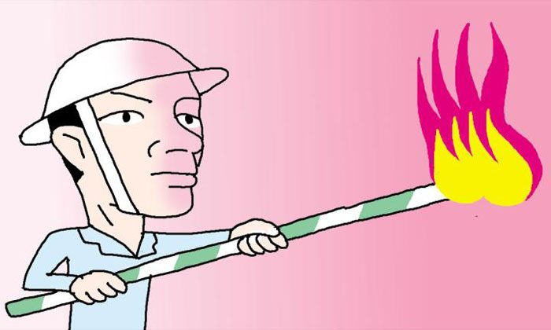

매체 조선일보등록일 2017-01-12
[만물상] 대한민국 첫 고로(高爐)의 퇴역
선우정 논설위원 입력 : 2017.01.12 03:10
44년 전 포항제철이 본사 앞마당에서 올림픽 성화 릴레이 같은 행사를 열었다. 경북 포항의 6월 햇살에서 불씨를 얻어 '원화봉(元火棒)'에 붙였다. 고로(高爐·거대한 용광로)에 지피는 첫 불을 '원화'라고 한다. 주자 7명의 바통을 이어 박태준 사장이 원화봉으로 고로에 불을 붙였다. 이 작은 불이 철광석을 녹여낼 수 있을까. 돼지머리 앞에서 임원들이 성공을 빌었다.
▶1973년 6월 9일 아침 7시 30분. '21시간 만에 오렌지색 섬광이 출선구(出銑口)를 뚫고 사람 키보다 높이 치솟았다. 천천히 불꽃이 스러졌다. 숨을 죽이고 내려다보는 사람들 발밑으로 꾸물꾸물 기어나오는 물체가 있었다. 용암 같은 황금색 액체였다. 아침마다 본 영일만의 일출, 맑은 아침 수평선에 올라앉는 찰나의 태양이 내는 빛깔이었다. 쇳물이다. 그 역사적 현장을 지켜보는 사내들 눈에서 왈칵왈칵 눈물이 흘러내렸다.'(이대환 '박태준 평전') 대한민국 첫 고로가 쇳물을 쏟아낸 순간의 기록이다.

▶이 고로가 품어낼 쇳물 연간 100만t을 어디에 쓸까. 대한민국 중공업은 이 고민에서 시작했다. 김학렬 부총리는 정주영 현대 사장에게 시급히 배를 만들기를 권유했다. 정주영은 독(dock·배를 만드는 거대 공간)과 선박을 동시에 만드는 '정주영다운' 방식으로 응답했다. 조선 산업의 출발이다. 몇 년 후 첫 국산차 '포니'를 시작으로 자동차 산업이 융성한 것도 양질 쇳물을 품어낸 고로가 있어 가능했다. 건설업, 기계공업도 이 고로가 밑을 받쳤다.
▶고로 완성 직후 포철 준공식이 열렸다. 서울 광화문의 경축 아치에 '포항종합제철 준공' 글자가 붙었다. 포철의 기획자 박정희 대통령이 축사를 했다. 박태준은 그에게 고로의 쇳물로 만든 '철(鐵) 병풍'을 선물했다. 노산 이은상이 시를 지어 새겼다. 〈보라 하늘을 향해 치솟는 불꽃/ 여기는 잠자지 않는 일터/ 지축을 흔드는 우렁찬 소리/ 파도보다 더 높은 젊은 의욕/ 우리는 땀과 양심과 성실을 바쳐/ 새 역사의 바퀴를 떠밀고 간다/ 조국과 인류의 영광을 위해〉
▶1000도가 넘는 열기를 반세기 가까이 견뎠다. 보 수(補修)를 거듭하면서 수명을 연장했지만 이제 한계에 도달한 모양이다. 올해 가동을 끝내고 퇴역한다고 한다. 뜨거웠던 시대, 대한민국의 이 첫 고로만큼 뜨겁게 살고 떠나는 존재는 찾기 어려울 것이다. 그동안 포스코의 고로는 10개로 늘었다. 맏형이 쉬어도 경제에 별 탈 없을까. 대한민국 경제사에서 그의 퇴역이 영광의 끝이 아니라 새로운 시작이기를 기원한다.
출처 : http://news.chosun.com/site/data/html_dir/2017/01/11/2017011103006.html